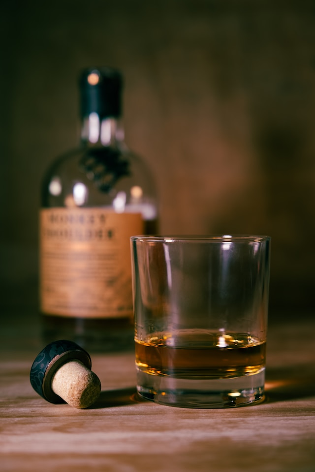

Welcome to your Whiskey Collection!
Named the best Blended Malt by Whisky Magazine for 2009, 2010, and 2011,
this is considered amongst many whisky drinkers to be one of the preeminent expressions within
the last two decades. A vatted malt named after the father of Japanese whisky, Masataka Taketsuru,
its caramel in color with a rich, full-bodied spice.